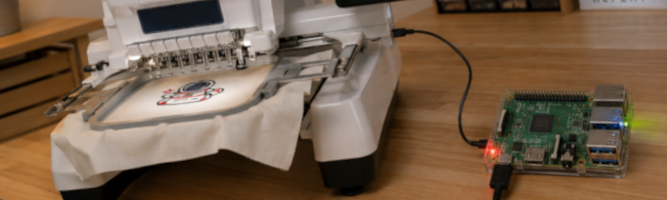

From design idea to embroidery machine.
A tailored interface that makes designs, color changes, previews, and machine transfer accessible from one focused workspace.
Discuss a custom solution
Creative work should not be slowed down by awkward tools.
Preparing an embroidery design involves choosing files, checking colors, previewing changes, and finally transferring the result to the machine. When these steps happen in separate programs or require technical knowledge, small adjustments become unnecessarily time-consuming.
The client needed a compact workspace suited to the actual equipment and day-to-day production process, rather than another general-purpose design application.
A purpose-built interface with the important choices up front.
I designed and developed a browser-based workspace that runs on a small dedicated computer. Designs can be organized, colors adjusted, and changes previewed before a file is sent directly to the embroidery machine.
I translated the underlying file and device operations into familiar visual actions, so the experience stays centered on the creative result rather than the machinery behind it.
Fewer interruptions between an idea and production.
The unified workflow reduces switching between tools and makes common adjustments easier to understand. Because the solution is tailored to the client's setup, it can remain focused and evolve around real production needs.
This case reflects how I approach specialized projects: listen carefully, learn the domain, and make unusual technical requirements feel ordinary to the person using the product.